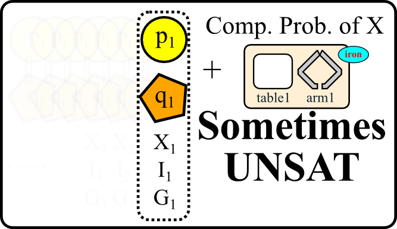

Applying Problem Decomposition to Extremely Large Planning Domains
Masataro Asai and Alex Fukunaga
Univ. Tokyo
Factory assembly problem cell-assembly
Hi everyone, I'm Masataro Asai from Tokyo, Japan, and I'd like to present here about my recent paper on cyclic planning and problem decomposition.
I first briefly describe the target domain, CELL-ASSEMBLY, and then the summary of our contribution
1 CELL-ASSEMBLY
- gripper + woodworking + logistics.
- many products, large scale, repetitive
 multiple operations to complete each product
multiple operations to complete each product
- moves without collision.
- The problem is similar to gripper, plus woodworking, plus logistics.
- There are many products in the conveyor that should be assembled with parts. Each products are identical.
- To complete each product, multiple assembling operations are required. Assembling should be done on the tables.
- Finally, the planner should move the robot arms and transport the products while avoiding the collision between arms.
1.1 Planner's Task
Static assembling recipes are provided in the problem
Primary Task : optimizing the arm motion
In this domain, assembling recipes for the products are provided in the problem. Where to do what in what order, is already specified.
Therefore the primary task of a planner is to optimize the arm motion.
2 Summary of contribution
object categorization and problem decomposition
for very large instances of repetitive problems like CELL-ASSEMBLY
+Experimental categorization results on EXTREMELY large CELL-ASSEMBLY instances & IPC domains.
Our contribution is summarized as follows. We provided an automated object categorization and problem decomposition method for very large instances of repetitive problems like CELL-ASSEMBLY
With experiments, We showed that our method successfully decompose CELL-ASSEMBLY into subproblems. But more importantly, it decomposed extremely large instances of IPC domains.
3 Previous Work
ACP: Planning with loops,
using the cyclic structure of the domain
- 6/24 (poster), 6/26 (Session AM 1a: Assembly and Manufacturing) :)
Before describing our method, we briefly summarize our previous work ACP, automated cyclic planner. It solves repetitive problems like CELL-ASSEMBLY under some conditions.
- It is a previous work but is going to be, however, presented in the poster session tomorrow, and also in the final day of ICAPS main track.
3.1 Previous Work: ACP
- Provides a cyclic planning framework applicable if
- All products are indistinguishable
- i.e. each product can be assembled with the same plan
- except the object index i.
- Result: construct a loop plan once and unroll it on i
- pi -> p1, p2, p3 …
ACP proposed
- a cyclic planning framework for solving these kind of large problems. The restriction is,
- that all products should be indistinguishable.
- in other words, each product can be assembled with the same plan
- except difference of the index. In the figure, the index is i and the total number of product is one thousand.
- Under such condition, it constructs a loop plan automatically
and unroll the same plan on many instances of i.
- for example, we obtain an efficient loop plan for each loop and instantiate it for i=1,2,3 and so on.
3.2 The Loops in the previous work
This is an illustration describing the loop structure. The upper half of the figure describes the state of the assembly system at i-th iteration in the manufacturing process. We call it an i-th steady state. If we update the index i to i+1, only the indices of objects in a Steady State changes, but the state of the other objects, such as arms, tables remains as they were, or restored to the same state again. In each cycle, one product exits the system while a new product enters the system and is partly assembled.
3.3 Issues in the previous work
- Mixed Orders
- A x 100, B x 200
- Static connections e.g. between products pi and parts qj etc.
- (to-be-attached pi qj) for all i=j
- Unroll i and pi while fixing j in qj
- Invalid : (to-be-attached p1 q4)
- Objects forming a Structure
There are two issues in this strategy.
- The first one is about the mixed orders.
- For example, the problem may be a task to assemble 100 products of A and 200 products of B, and the plan to assemble each A and B is different.
- The second issue is that there may be the static connections
such as between products p-s and parts q-s.
- For example, if a predicate like (to-be-attached pi qj) is specified for all i=j,
- we cannot simply unroll the loop plan with i and pi while fixing j in qj to some value. This is because it destroys the static connection between a part and a product.
- for example, if i is 1 and j is 4, it yields an invalid plan containing (to-be-attached p1 q4).
- In other words, they forms a static structure similar to the concept of classes in object-oriented programming. ACP do not assume these cases.
4 heterogeneous vs homogeneous problems
In summary, we have two problems:
- mixed orders
- different subproblems/subplan per product
- object structure
- static connections
Therefore, we want to
- Detect the static structures of objects
- Categorize them into plan equivalence groups (same order in each group)
- Form several loop plans / equiv. groups
- Unroll them and combine them
This paper's main topic: Report on preliminary work on 1 and 2
5 Structures: Component Abstraction [Botea et.al 2004]
Extract components from Static Graph
Component 1 : p1, q1, (to-be-attached p1 q1)
Component 2 : p2, q2, (to-be-attached p1 q1)
Component 3 …
for all j , qj is made of iron (made-of qj iron)
The second problem was solved using Component Abstraction, a work by Botea et al in 2004.
It extracts components from a graph called Static Graph, by seeing the static predicates in the problem description. In the previous example, It can extract p1 and q1 as a component. and also p2 and q2, p3 and q3 and so on.
Also, assume that qj is made of iron in this problem.
5.1 Static Graph
Static fact: s.t. never added/deleted
In static graph, the nodes are the objects and the edges are the so-called static facts in the initial state.
Static facts are the propositions that are never added nor removed by any action.
5.2 Component Abstraction (cont.)
randomly
The Static Graph of the previous example is shown in the figure.
The algorithm then randomly chooses a seed type, one of PDDL types in the domain. In this example, it has chosen yellow in the figure. After that, for each object of that type, it constructs a component of one-node. A component is shown in green. Now we have two components in the left and in the right. It next tries to extend each component.
5.3 Component Abstraction (cont.)

- Each extension consumes one edge and one new node. If one component adds a node in one type, then it simultaneously try to extend the other components toward the same type. In the figure, the left component adds q1 in orange, so the right component also adds q2, in the same color.
- Extension continues until any two components share a node. In the next step of the example, both q1 and q2 tried to include iron and the extension stops.
In our paper, the small contributions of ours are that we used the deterministic version of component-abstraction algorithm to ensure the best abstraction is achieved. Also we devised Attributes, which can later be used to accelerate the categorization.
5.4 Components and Attributes
- Component 1
- (person 1 = Asai)
- head1 leftarm1 … hair1
- hair1 is black
- Component 2
- (person 2)
- head2 leftarm2 … hair2
- hair2 is black
The two concepts can be described as follows.
Imagine there are two people. Person 1 consists of a head, arms, and so on. People have their own hair color. Same things apply to the person 2. Now, the relationship between a person and, say, its head is normally static.
5.5 no additional heads!
- head-less
- no shared-head
- black hair
If you add a head to me, I have two heads which just results in an alien.
- If you remove a head from me, it means I'm dead.
- Moreover, a head cannot be shared by more than two person.
- On the other hand, the hair color black can be shared among people, so it is just an attribute of a person.
5.6 Quick summary (first half)
- object structure
- DONE by Detecting the static structures of objects
- mixed orders
- different subproblems/subplan per product
- Categorize components of mixed orders into groups of single orders
Now, using Component Abstraction by Botea et al,
- We successfully divided the very large sets of objects into components. The first problem is solved now.
- However we still have mixed-orders.
There are incompatibilities between subproblems.
- We categorize them into groups of single orders.
6 Categorize Mixed Orders (recipes)
- Build a Component problem
- focused on one component
- Solve it
- get a plan
- Plan-wise Compatibility checking
- replace p1, q1 with p2, q2
Categorization of mixed orders consists of 3 steps. We first
- Build small problems called component problem which is focused on one component.
- Then we solve it and get a plan with underlying strips planner.
Finally, we check the compatibility of the plans between the components, by replacing the objects in the plan with the objects in the other components.
- In the previous example, we replace p1, q1 with p2, q2.
6.1 Component Problem
Consider the original problem. There should be objects which does not belong to any components. These are called the environment objects. For example, in CELL-ASSEMBLY domain, environments are marked in light brown. Tables, arms and attributes like iron, are all the environment objects.
The rest of objects are hundreds of thousands of components. We take one component X out of them, and solve a problem focused on X, ignoring many other Y's.
6.2 Component Problem (cont.)
Now let's pick out some X and Y out of components.
A component problem is a problem which has objects, initial states and goal states of X and environment. In the figure, we also show a component problem of Y.
6.3 Component Problem (cont.)
We expect both problems yield plans, which are obtained by the baseline planners.
In the obtained plan, we substitutes the objects in X with the objects in Y. For example, we replace p1 with p2 and q1 with q2 in plan PX. Let the result plan be P'X.
Next we check the validity of the substituted plan P'X. If the plan is valid, then X and Y are the compatible components.
I think these parts are the main contribution in my paper.
6.4 Sometimes UNSAT
Because we deleted some objects and Init.

I said "we expect both problems yield plans" because sometimes they do not. They might be UNSAT because of the deleted objects and Init.
In this case, we re-run the search on component problems with some relaxation or inflamation.
6.5 UNSAT -> restart with restoration
We call this version of problem a "restored problem". It is a problem with lot more number of objects and init, but the number of goals are still quite limited. The branching factor affects the planner but the search depth should be far less than that of the original problem.
7 Experiments
- FD/LAMA2011
- 1st step (GBFS)
- 15GB
- Xeon 2.3GHz
- 6hrs
Combining these methods, we experimentally checked if our method collectly decompose a given problems and how much decomposition was possible in the standard IPC problems.
As I stated in the beginning, our aim is at the large problems that are clearly beyond the reach of current planners. To obtain such problems, we first built large problems of CELL-ASSEMBLY. Also, we built IPC problems that cannot be solved by Fast Downward. We showed the example in this figure. The experimental environment of FD was
- FD with LAMA2011
- greedy best first search
- with 15GB
- with Xeon processor
- within 6hrs.
The problems are built with official generator as much as possible. If the generators are not available, I wrote my own script.
The result problems are quite large. For instance, the smallest instance of woodworking problem we conducted our experiment on, is problem p86, which is at least twice larger than the largest problem number that is in IPC benchmarks. We tested upto p200.
7.1 Categorization results
and this is the categorization results. For each point, the x-coordinate shows the number of components found in each problem and the y-coordinate shows the number of groups obtained by categorizing those components.
In the bottom left, we see the brown bars and light-blue bars, represent the categorization results of single-order and two-mixed-order problems of CELL-ASSEMBLY. So CELL-ASSEMBLY problems are correctly decomposed as expected.
More importantly, the result also shows that the compatible components do exists in some IPC problems. Remember, these compatible components are the strong candidates of the elements that form loops, and this is the primary motivation for obtaining compatible components. If we form loops, we can super reduce the amount of computation, so this is very good news.
8 Conclusion
- An automated object categorization and problem decomposition method
- for very large instances of heterogeneous repetitive problems
- like CELL-ASSEMBLY
- Decomposed CELL-ASSEMBLY into compatible components
- Structural compatibilities, found in large instances of IPC domains.
- TODO : Full integration with Automated Cyclic Planner (ACP)
- TODO : combining/interleaving several kinds of loops
In conclusion,
- We provided an automated object categorization and problem decomposition
method
- for very large instances of heterogeneous repetitive problems
- like CELL-ASSEMBLY
- With experiments, We showed that our method successfully decompose CELL-ASSEMBLY into subproblems.
- Finally, the most important finding is that the structural compatibilities were found in the large instances of IPC domains.
- However, since this is a workshop paper, there are lotsof TODOs. The first priority is the full integration with Automated Cyclic Planner (ACP). Since we found equivalent objects, I believe this can be done.
- The next step is combining the loop plans returned by ACP. This is again I'm not sure. The problem remains at how we interleave the actions.
8.1 Thanks for Listening!